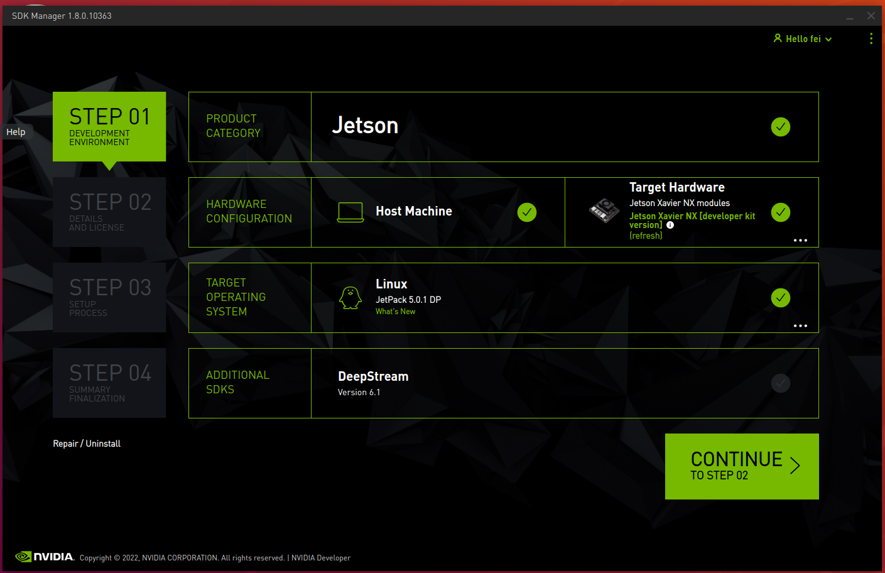

ROS实战（七）Jetson Xavier NX 高级操作
最近的生活真的是一塌糊涂，秋招不像秋招，面试没有面试。
好久没有好好静下心来写文章了，今天就把最近折腾的东西记录一下吧。
关键词：Jetson
前言
Jeston是NVIDIA开发的嵌入式平台，支持CUDA。这款板子是笔者拿来用来做毕业设计的。
以下是他们的参数指标，可以看到性能还是不错的，除了有些鸡肋的armv8 CPU。
安装镜像到nvme硬盘
NX自带一个NVMe M.2 SSD的插槽，还带一个M.2 key的无线网卡插槽。我将自带的realtek网卡拿下来，换上了intel ax201 wifi6无线网卡。并把闲置的SSD也放了上去。
从Jetpack 4.6开始，官方就支持将系统写入固态硬盘。而之前是只能向SD卡里写的。固态硬盘的速度和SD卡里相比那可快多啦。下面就介绍以下如何安装镜像到nvme硬盘。
下载SDK
首先要准备一台ubuntu的电脑，或者使用docker，这个官网有说明：
- 如果想装最新版的Jetpack DP 5.0.1，需要使用ubuntu 18.04或者20.04，而5.0.1之前的版本只能使用ubuntu 18.04.
安装SDK
下载完毕后，执行以下命令安装sdk
1 | sudo apt install ./sdkmanager.deb |
安装完毕以后是这个样子的
现在还没有检测到Xavier NX，用一根普通的usb线将板子的micro usb口连接到电脑，然后就能检测到了。

点击CONTIUNE，进入下一步
选择下载的部分
第一次安装时，要把HOST的部分的内容全部下载下来，然后根据自己的需要安装Target。我这里为了方便起见就全部安装了。
为了方便起见，可以选择先下载后安装，这样即节约了时间，由减少了因下载数据丢失而出现的错误。
连接好Xariver，勾选协议，选择下一步
安装步骤
首先是输入ubuntu的密码，方便sdk安装一些Host主机没有的软件包。
接下来是选择刷入的存储设备，并连接到板子进行刷机。
- 第一个箭头的位置是输入Xavier NX现在的账户和密码，方便SDK自动设置NX进入恢复模式；如果此时NX已经无法是打开，那么也没有关系，将Automatic Setup选项修改为Manal Setup，并根据给出的提示将NX手动设置恢复模式；具体请看下图
- 第二个箭头的位置是选择刷入的设备，这里选择NVMe设备，SDK会自动选择

输入完毕以后，就可开始刷机了，点击Flash，耐心等待流程结束。
耐心等待刷机结束。
Ooooops：翻车了，刷机竟然失败。后来重新刷了一下就可以了。
启用国内源
这个老生常谈了，国内速度比较快的应该是中科大的源了.
1 | sudo mv /etc/apt/source.list /etc/apt/source.list.bak |
1 | deb https://mirrors.ustc.edu.cn/ubuntu-ports/ focal main restricted universe multiverse |
安装smb文件共享服务器
安装smb就可直接在windows上挂载NAS的硬盘了。
smb在linux上有一个开源的实现就是samba，这个软件通常在软件包管理器中。
安装软件包
1 | sudo apt update |
查看启动状态
1 | sudo systemctl status nmbd |
修改配置文件
备份默认的配置文件
1 | sudo cp /etc/samba/smb.conf{,.backup} |
设置绑定网络接口
1 | # The specific set of interfaces / networks to bind to |
- 这里根据自己的网络接口确定，通过
ip a命令可以查看。